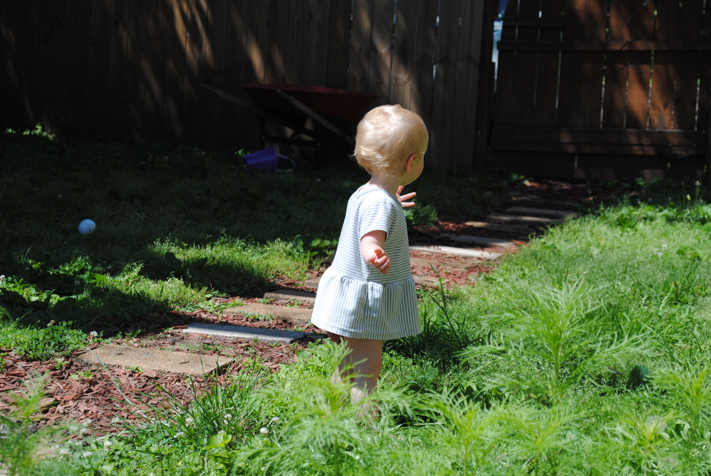

Why Garden?
Gardening benifits the Gardener, and his/her community, plain and simple. Once you start harvesting your household's fruits and veggies from your backyard instead of the grocery store, you'll start saving money pretty quickly. A study by the National Gardening Association details that the average gardener's $70 investment provides "an estimated 300 pounds of fresh produce worth $600."
In addition, home grown fruits and veggies allow the consumer to control what soil, fertilizer, and other foreign substances are in their vegitation. This is a sigh or relief in an era of preservative filled produce.
Tending to a garden is also body positive. It can reduce stress, promote healthy levels of excercise, and increase Vitamin-D intake.
Erecting and maintaing a garden can also increase curbside appeal, adding monetary value to your community. But who cares about money? Communites containing gardens have proven that they have increased overall happieness of their members. In a study conducted by Princeton University, researchers found that "household gardens could be key to providing food security in urban areas and making cities more sustainable and livable."
The real question is,
Why wouldn't you garden?
